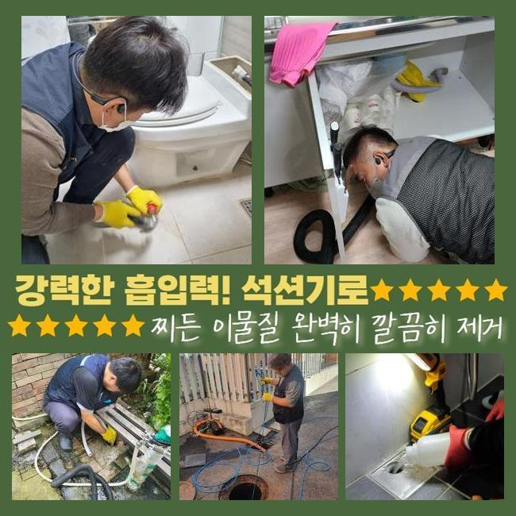
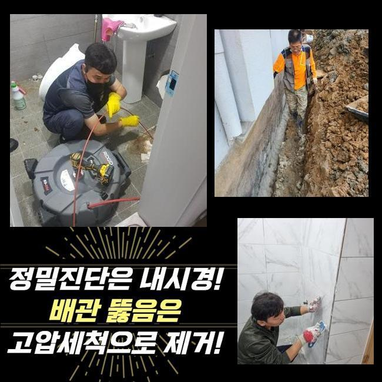
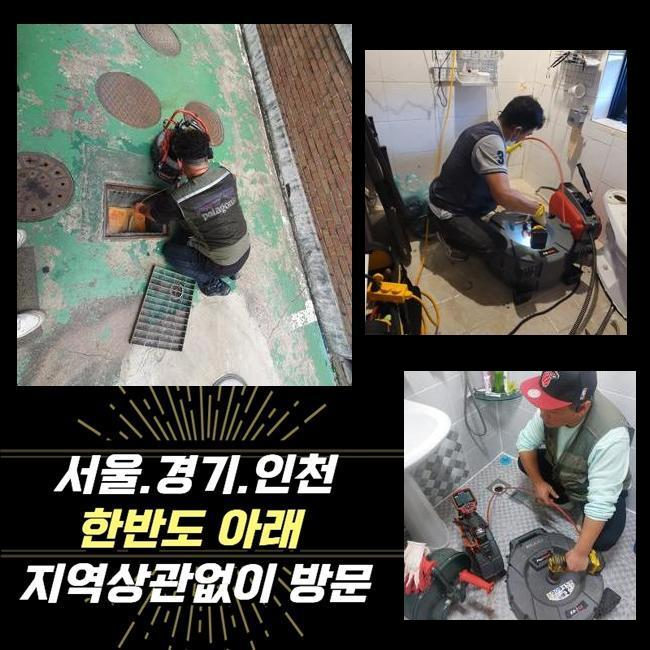
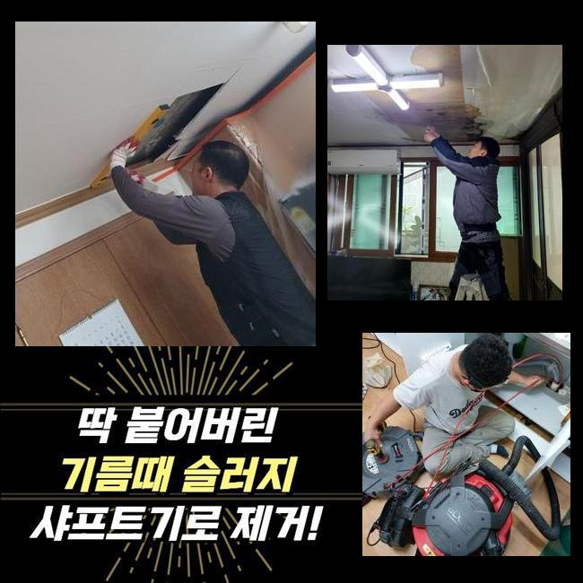
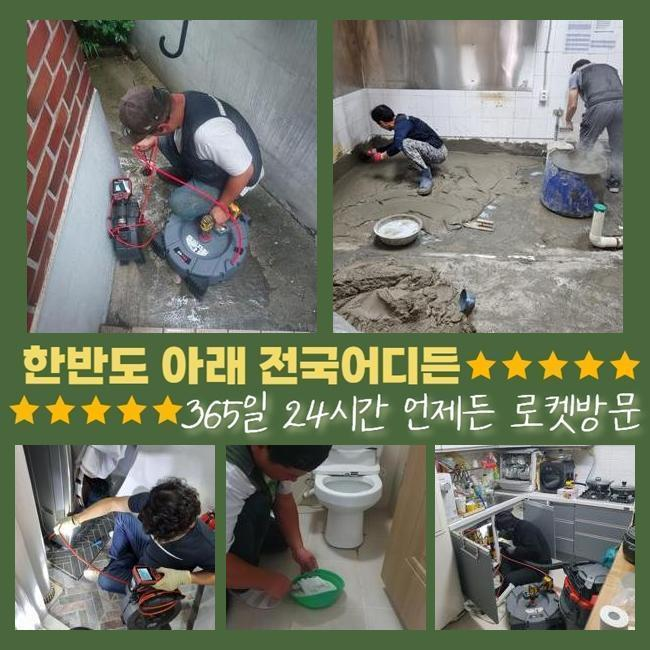
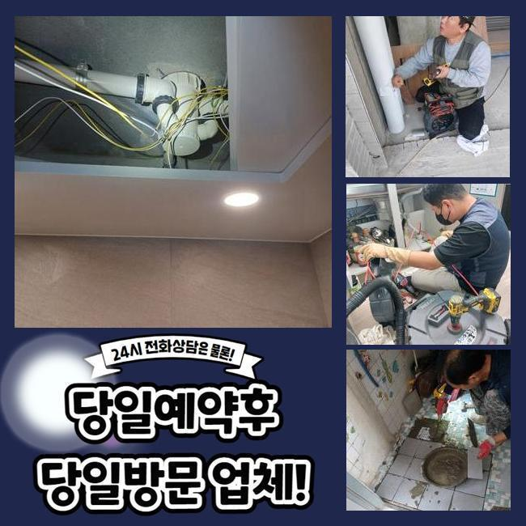
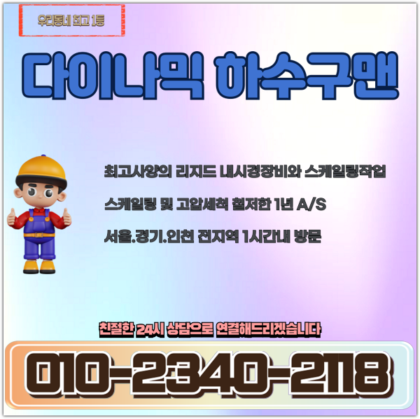

🏠 포천 군내면욕실역류 신북면 하수구뚫는곳 배관설비공사
용인 싱크대막힘 전문 시공 후기

📋 작업 개요
- 위치: 용인
- 서비스 유형: 싱크대막힘, 하수구막힘, 배관막힘, 집수정막힘, 역류해결, 뚫는업체, 배관청소, 설비공사
- 작업 일시: 2025. 3. 27. 10:02
- 업체명: 하수구수사대 (010-5615-2118)
🔍 문제 상황
포천 군내면욕실역류 신북면 하수구뚫는곳 배관설비공사
주방에서 주방라인이 막힌다면 설거지를 할때에도 애로사항을 겪는데요
요식업소에서 이같은 문제들이 발생되면 영업자체에 고충을 안겨줄 수 있어요
때문에 안정적이고 해결해주는것이 필요하겠습니다
식당내측의 배수구에서 통수오류가 생기게 되었어요
주변의 식당에도 물빠짐이 이뤄지지않는 증세들이 보여졌어요
덧붙여 문제들이 나타난다면 공동라인에 까닭이 생겨났을 가능성들을 배제할 수 없죠
그리하여 동일 배수관을 쓰고있는 집수정의 점검들도 동반되야하는 장소였어요
도착한 후 먼저 주방 조리공간이 제 기능을 못하는것을 관찰할 수 있었습니다

🔎 원인 분석
💡 전문가 진단: 정밀 진단 장비를 사용하여 슬러지의 고착 여부를 판명하고 타격/세척 작업을 실시했습니다.
결과적으로는 배수들이 진행되지 않았고 올바른 작업이 수행되야했습니다
배수관의 결함현상은 다양한 원인들로 등장하는데 이 중 보통의 원인들은 노후되거나 잔여물질들이 누적되는 경우겠습니다
이같은 문제의 경우 위생 관련한 사항에도 대대적인 악영향들을 끼쳐서 그에 따른 해결책들을 꾀하게 되었습니다
내시경카메라를 배수관으로 넣어주면서 구석까지 파악해보니 구간별로 이물질이 누적된것을 인지했죠
내시경기기는 좁은 하수도를 살펴보는 장치로써 투입되는 선을 관로안으로 투입시켜 그때그때 육안으로 관찰하게해주는 기기입니다
살펴보았더니 이물들이 흐르질 않고 정체된 상황으로 보였습니다
하수도가 노후되거나 구조상의 문제로 보이지는 않았고 배수 과정에서 빠져나가던 이물질이 쌓이게되어 배수를 방해하는게 그 까닭이였습니다
바닥배관과 외부쪽이 이어져있는 구조여서 싱크대라인에서 등장한 이물들이 바깥까지 영향력을 미친 상황이였죠
까닭들을 체크해보고 즉시 하수도를 뚫어보고자 청소했는데요
이 시기에 써준것은 플렉스 샤프트라는 장비들로 해당 기계는 배수관에서 원 운동을 하며 단단해진 것들을 제거하는 고마운 장비이죠

🔧 작업 과정
샤프트의 사슬들을 사용해주면 주방쪽이 막혀버렸을때 오염물을 제거해내고 더 나아가 표면을 보호하면서 스무스하게 청소해줍니다
샤프트기계를 삽입하여 고착화를 보이는 곳에 접근한 다음 체인으로 흡착물을 타격했는데요
폐기물들이 샤프트장치에 엉킨모습으로 배출됐는데요
제거된 잔해물들을 확인했더니 생각한대로 씽크볼에서 흐른 음식쓰레기와 기름성분이 대부분이였어요
이 중 음식쓰레기가 많았었는데 가열된 뿌리부분의 잔여물들로 개수대에서 흐르게되면서 물이 안빠지게 만드는 주범으로 작용했죠
뿌리들은 녹지 않는 까닭에 배수관에서 위치하게되어 막히게만듭니다
식자재들과 기름성분들도 어마어마하게 제거되었는데 조리 시에 쓰여지는 기름성분들이 배수관으로 배출되며 벽쪽에서 굳게된건데요
기름의경우 배수관에서 점진적으로 단단해지며 벽쪽에 흡착되고 다른 음식쓰레기와 합쳐져 더욱 빠르게 막혀버리게 하죠
기름들은 지속해서 딱딱해지므로 간단하게 해결할 수 없는 현장이 참 많아요
샤프트의 사슬들을 운용하여 잔해들을 제거하고 흡입장치를 삽입하여 밑으로 떨어진 부유물을 배출시켜 빈틈없이 마무리해주었어요
고형상태에 있던 기름성분과 부유하던 찌꺼기들까지 폐기한 후 문제의 하수관을 내시경장비들로 점검하고 내측 컨디션을 보게되었어요
이상 징후들은 바로 잡았고 밖의 배관의 역류들도 깔끔히 사그라들었습니다
작업들이 일단락되고 의뢰인께 조리공간 수챗구멍 주의사항과 관련된 도움되는 내용들을 설명했어요
첫번째로 하수관에 잔재들을 여과없이 배출시키지 않는게 도움이된다고 설명드렸어요
더 나아가 단단한 식재료나 기름의경우 하수구 막힘의 원인들이 될 가능성이 높아 필히 잔여물질들을 개수대로 흘려보내지 마시고 미리 버려주실것을 당부드렸죠
기름물질들은 용해되지가 않고 내부표면에서 고착되기에 사용한 기름들은 휴지등으로 닦고서 버리는게 권장하고 있는 방식이에요


✅ 작업 완료
예상에 없던 배수정체를 예방해주실 땐 정기적으로 배수관을 관리하고 필요할 경우 배수관 제품들을 쓰는게 좋다고 말씀드렸어요
고객분은 저희의 설명을 들으시고는 신경써서 관리들을 꼼꼼히 하실것을 말하셨는데요
하수구 증상들은 방치 시에 처음보다 심각해져서 앞서서 조속하게 대처하는게 합리적이랍니다
끝내 의뢰인의 불편들을 타파하여 안심할 수 있었고 예기치못한 물 안빠짐 현상을 막고자 지속적인 관리들과 동반해야할 것을 최종적으로 강조합니다!




⚠️ 주방 싱크대 배관 막힘 예방 수칙
- ✅ 기름기가 묻은 식기나 프라이팬은 설거지 전 키친타올로 반드시 기름때를 닦아내세요.
- ✅ 주기적으로 싱크대 개수대에 뜨거운 물을 가득 받아 한 번에 내려 배관 내부 기름을 씻어내세요.
- ✅ 배수구 거름망을 미세한 필터로 사용하시고 음식물 찌꺼기가 틈으로 새어 들지 않게 관리하세요.
- ✅ 베이킹소다와 식초를 뜨거운 물과 함께 일주일에 한 번씩 부어주면 배관 살균과 막힘 예방에 좋습니다.
💡 핵심 정리
- 확실한 장비 작업(내시경 점검 및 샤프트 스케일링)으로 원인을 뿌리 뽑습니다.
- 작업 후 1년 이내에 동일한 부위 재발 시 100% 무상 A/S 서비스를 보장합니다.
- 서울 · 경기 · 인천 전 지역에 24시간 언제든 긴급 출동할 수 있도록 항시 대기 중입니다.
❓ 자주 묻는 질문 (FAQ)
🚨 용인 싱크대막힘 문제로 고민이신가요?
정확한 원인 진단과 확실한 시공으로 재발 없는 해결을 약속드립니다.
24시간 긴급 출동 | 서울 · 경기 · 인천 전지역 | 1년 내 재발 시 무상 A/S